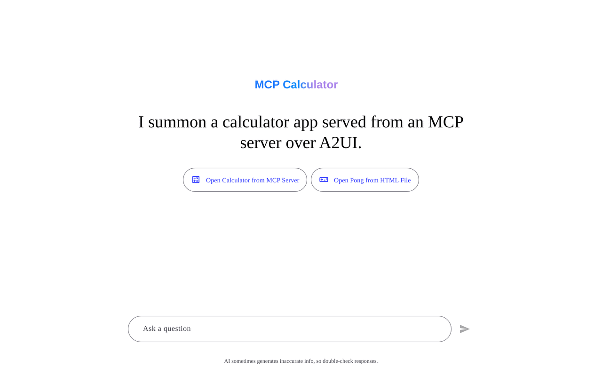
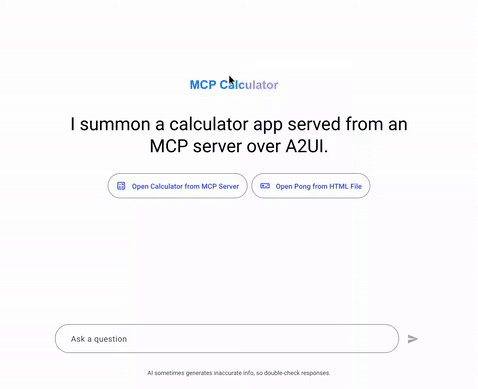
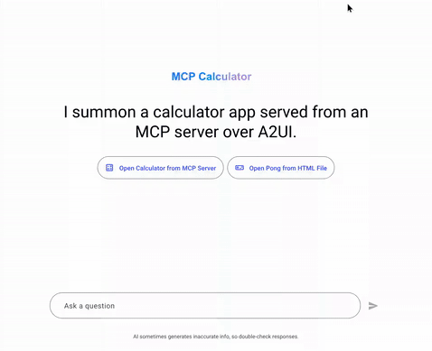

A2UI Surface 안의 MCP Apps 통합¶
이 가이드는 Model Context Protocol (MCP) Applications가 A2UI surface 안에 통합되고 표시되는 방식과 보안 모델, 테스트 지침을 설명합니다.
NOTE: 핵심 A2UI-over-MCP 프로토콜을 찾고 있나요? MCP tool 호출에서 A2UI JSON payload를 반환하는 방법은 A2UI over MCP를 참고하세요.
개요¶
Model Context Protocol(MCP)은 MCP 서버가 풍부하고 인터랙티브한 HTML 기반 사용자 인터페이스를 host에 전달할 수 있게 합니다. A2UI는 이러한 서드파티 애플리케이션을 실행하기 위한 안전한 환경을 제공합니다.

Double-Iframe 격리 패턴¶
신뢰할 수 없는 서드파티 코드를 안전하게 실행하기 위해 A2UI는 double-iframe 격리 패턴을 사용합니다. 이 접근 방식은 구조화된 JSON-RPC 채널을 유지하면서 raw DOM injection을 메인 애플리케이션에서 격리합니다.
보안 근거¶
allow-scripts를 사용하는 표준 single-iframe sandboxing은 allow-same-origin과 결합되면 우회되는 경우가 많으며, 이는 컨테이너화를 무력화합니다. allow-scripts와 allow-same-origin이 모두 있는 iframe은 부모 DOM과 프로그래밍 방식으로 상호작용하거나 자신의 sandbox 속성을 제거해 sandbox를 탈출할 수 있습니다.
이를 방지하기 위해 A2UI는 서드파티 애플리케이션이 실행되는 inner iframe에서 allow-same-origin을 엄격히 제외합니다.
아키텍처¶
- Sandbox Proxy (
sandbox.html): 동일 origin에서 제공되는 중간iframe입니다. raw DOM injection을 메인 앱에서 격리하면서 구조화된 JSON-RPC 채널을 유지합니다.- 권한: host template에서는 sandbox를 적용하지 마세요. 예:
mcp-app.ts또는mcp-apps-component.ts. - Host origin 검증: 메시지가 예상한 host origin에서 왔는지 검증합니다.
- 권한: host template에서는 sandbox를 적용하지 마세요. 예:
- Embedded App(Inner Iframe): 가장 안쪽의
iframe입니다. 제한된 권한으로srcdoc을 통해 동적으로 주입됩니다.- 권한:
sandbox="allow-scripts allow-forms allow-popups allow-modals"(allow-same-origin,allow-top-navigation,allow-top-navigation-by-user-activation은 반드시 포함하면 안 됩니다). - 격리: unique origin으로 인해
localStorage,sessionStorage,IndexedDB, 쿠키 접근이 제거됩니다. - 최상위 윈도 하이재킹 방어:
allow-top-navigation과allow-top-navigation-by-user-activation을 제외하면, 내장된 스크립트가 frame busting 공격(예:window.top.location = "...")으로 host 윈도를 다른 곳으로 리디렉션하는 것을 막을 수 있습니다. - 하이퍼링크를 통한 데이터 유출 방어:
allow-popups를 제외하고 링크 내비게이션을 가로채면, 신뢰할 수 없는 콘텐츠가 새로 열린 윈도로 유도하는 클릭재킹을 통해 데이터를 빼내는 것을 막을 수 있습니다.
- 권한:
물리적 Iframe 중첩¶
flowchart TD
subgraph "Host Application"
A[A2UI Page] --> B["Host Component e.g., McpApp"]
end
subgraph "Sandbox Proxy"
B -->|Message Relay| C[iframe sandbox.html]
end
subgraph "Embedded App"
C -->|Dynamic Injection| D[inner iframe untrusted content]
endEnd-to-End 아키텍처와 Lifecycle Flow¶
전체 주기에는 layout tree 계층, 완전히 분리된 backend actor(Proxy Agent와 MCP Server), 그리고 격리된 서드파티 위젯이 native sibling(예: Pong 게임의 scoreboard)과 반응적으로 상호작용하는 방식이 포함됩니다.
graph TD
%% 1. Top Tier (Strict vertical hierarchy)
MCPServer["MCP App Server<br/>(Hosts widget resources & core tools)"]
%% 2. Middle-Top Tier
Agent["AI Agent<br/>(A2UI Backend Coordinator)"]
%% 3. Subgraph for Host layout tree (Bottom Tier)
subgraph HostApp ["Host Application"]
direction TB
Shell["A2UI Rendering Engine & State Manager<br/>(Orchestrates native layout & state bindings)"]
subgraph LayoutTree ["A2UI Component Tree"]
McpComponent["McpApp Component<br/>(Sandboxed HTML/JS Widget)"]
SiblingComponent["Other A2UI Components<br/>(e.g., PongScoreBoard)"]
end
Shell <-->|"1. Initialize postMessage Event Bridge"| McpComponent
Shell -.->|"5. Reactive State Update<br/>(e.g., Render updated score)"| SiblingComponent
end
%% Vertical Channel connecting Top to Middle-Top
MCPServer ==>|"MCP Protocol (SSE / Stdio)"| Agent
%% Unidirectional Data Cycle (Flowing vertically through the center)
McpComponent ==>|"2. Tool Action Request<br/>(e.g., score_update)"| Shell
Shell ==>|"3. Action Delegation (A2UI Protocol)"| Agent
Agent ==>|"4. State Mutation & Sync (dataModelUpdate)"| Shell
%% Style Sibling Relationship
McpComponent -.->|"No Direct Access (Strictly Isolated)"| SiblingComponentSibling Update Loop의 동작 방식¶
- postMessage 이벤트 브리지 초기화(1): host shell이 double-iframe sandbox를 인스턴스화하고
McpApp컴포넌트와 안전한 message relay bridge를 설정합니다. - Tool Action Request(2): 사용자가 sandboxed app과 상호작용하면(예: Pong 게임에서 점수를 냄), app은 postMessage bridge를 통해 메시지를 post하여 tool action을 트리거합니다.
- Action Delegation(3): host layout engine이 action을 가로채 A2UI/A2A 프로토콜을 통해
AI Proxy Agent에 실행을 위임합니다. 외부 계산이나 리소스가 필요하면 agent는 표준 MCP Protocol(SSE / Stdio)을 사용해MCP App Server와 선택적으로 조정합니다. - 상태 변경 및 동기화(4): agent가 action을 처리하고 master session state를 변경한 뒤 host state manager로
dataModelUpdate를 push합니다. - Reactive State Update(5): host가 로컬 store를 업데이트하여 해당 state path에 바인딩된 sibling A2UI 컴포넌트(예: native scoreboard 또는 display)의 반응형 업데이트를 트리거합니다. sandboxed 컴포넌트와 native sibling 요소 사이의 직접 통신은 컨테이너화 보안을 유지하기 위해 엄격히 차단됩니다.
사용법 / 코드 예시¶
MCP Apps 컴포넌트는 일반적으로 A2UI 카탈로그의 custom 노드로 해석됩니다. 개발자가 코드에서 이를 사용하는 방식은 다음과 같습니다.
1. 카탈로그에 등록¶
애플리케이션 카탈로그에 컴포넌트를 등록해야 합니다. 예를 들어 Angular에서는 다음과 같습니다.
import {Catalog} from '@a2ui/web_core/v0_9';
import {z} from 'zod';
import {McpApp} from './mcp-app';
import {Button} from './button';
import {Snackbar} from './snackbar';
const McpAppSchema = z.object({
content: z.union([z.string(), z.object({id: z.string()})]).optional(),
allowedTools: z.array(z.string()).optional(),
title: z.string().optional(),
});
export const DEMO_CATALOG = new Catalog(
'my_app.org/some_catalog.json',
[
{name: 'McpApp', component: McpApp, schema: McpAppSchema},
{
name: 'Button',
component: Button,
schema: z.object({
label: z.string(),
action: z.any().optional(),
}),
},
{
name: 'Snackbar',
component: Snackbar,
schema: z.object({
message: z.string(),
durationMs: z.number().default(3000),
}),
},
]
);
2. A2UI 메시지에서 사용¶
Host 또는 Agent context에서 이 custom node로 변환되는 A2UI 메시지를 보냅니다.
{
"type": "custom",
"name": "McpApp",
"properties": {
"content": "<h1>Hello, World!</h1>",
"title": "My MCP App"
}
}
content가 복잡하거나 인코딩이 필요하다면 URL-encoded 문자열을 전달할 수 있습니다.
{
"type": "custom",
"name": "McpApp",
"properties": {
"content": "url_encoded:%3Ch1%3EHello%2C%20World!%3C%2Fh1%3E",
"title": "My MCP App"
}
}
통신 프로토콜¶
Host와 embedded inner iframe 사이의 통신은 postMessage 위의 구조화된 JSON-RPC 채널을 통해 이루어집니다.
- Events: Host Component는 proxy에서 오는
SANDBOX_PROXY_READY_METHOD메시지를 수신합니다. - Bridging:
AppBridge가 메시지 relay를 처리합니다. 개발자, 특히 신뢰할 수 없는 iframe 안의 MCP App 개발자는bridge.callTool()을 사용해 MCP 서버의 tool을 호출할 수 있습니다. - The Host: 콜백을 해석합니다(예: 특정 resizing, Tool 결과).
제한 사항¶
가장 안쪽 iframe에서 allow-same-origin이 엄격히 생략되므로 다음 조건이 적용됩니다.
- MCP app은
localStorage,sessionStorage,IndexedDB, 쿠키를 사용할 수 없습니다. 각 애플리케이션은 unique origin에서 실행됩니다. - parent의 직접 DOM 조작은 차단됩니다. 모든 상호작용은 message passing을 통해 진행해야 합니다.
사전 요구사항¶
샘플을 실행하려면 다음이 설치되어 있어야 합니다.
- Python 3.10+ — agent와 MCP server backend에 필요
- uv — 빠른 Python 패키지 관리자(모든 Python 샘플 실행에 사용)
- Node.js 18+ 및 Yarn — 이 모노레포 워크스페이스 안에서 샘플 client app을 빌드하고 실행하는 데 필요합니다.
GEMINI_API_KEY— 모든 ADK 기반 agent에 필요. Google AI Studio에서 받을 수 있습니다.
패키지 매니저 사용: A2UI 저장소 안에 내장된 샘플 애플리케이션을 실행하려면 Corepack workspace로 구성된 Yarn이 필요합니다. 이 저장소 밖에서 여러분만의 일반적인 용도나 독립 프로젝트에 사용할 때는 원하는 패키지 매니저(예: npm, pnpm)를 사용하세요.
⚠️ 환경 변수 설정: shell에서
GEMINI_API_KEY를 export하거나 각 agent 디렉터리에.env파일을 만들 수 있습니다. agent는dotenv를 사용해.env파일을 자동으로 로드합니다.
샘플¶
MCP Apps 통합을 보여 주는 주요 샘플은 두 개입니다. 각 샘플은 여러 터미널을 필요로 합니다. backend service마다 하나, client용으로 하나가 필요합니다.
샘플 1: MCP App Standalone Sample(Lit Client & ADK Agent)¶
이 샘플은 Lit 기반 client와 ADK 기반 A2A agent로 sandbox를 검증합니다.
Step 1: Agent 시작¶
별도 터미널에서 agent 디렉터리로 이동해 agent를 시작합니다.
agent는 http://localhost:8000에서 실행됩니다.
Step 2: Client 시작¶
새 터미널에서 client 디렉터리로 이동해 dev server를 시작합니다(Lit renderer를 먼저 빌드해야 합니다).
client는 http://localhost:5173/에서 시작됩니다.
Step 3: Browser에서 열기¶
브라우저를 열고 http://localhost:5173/로 이동합니다. MCP App을 로드하는 A2UI 인터페이스가 표시되어야 합니다.
예상 결과: sandboxed iframe 안에서 MCP App을 로드하는 페이지입니다. iframe 내부의 "Call Agent Tool" 버튼을 클릭하면 agent가 처리하는 action이 트리거됩니다.
샘플 2: MCP Apps(계산기 + Pong) (Angular 클라이언트 + MCP Server + Proxy Agent)¶
이 샘플은 Angular 기반 client, MCP Proxy Agent, 원격 MCP Server로 sandbox를 검증합니다. 세 개의 backend process가 필요합니다.
Step 1: MCP Server(Calculator) 시작¶
MCP server는 SSE transport를 사용해 http://localhost:8000에서 시작됩니다(포트 8000이 사용 중이라면 다른 포트에서 시작됩니다. 예: uv run . --port 8001).
Step 2: MCP Apps Proxy Agent 시작¶
새 터미널에서 다음을 실행합니다.
cd samples/community/agent/adk/mcp_app_proxy/
export GEMINI_API_KEY="your-key" # or use a .env file
uv run .
proxy agent는 기본적으로 http://localhost:10006에서 시작됩니다.
Step 3: Angular Client 빌드 및 시작¶
먼저 저장소 루트 디렉터리에서 yarn build:all을 실행해 renderer package를 빌드합니다.
그런 다음 새 터미널에서 client 디렉터리로 이동해 로컬 의존성을 설치하고 앱을 시작합니다(sandbox iframe proxy를 자동으로 번들링하고 개발 서버를 시작합니다).
# Navigate to the client directory
cd samples/community/client/angular/
# Install local dependencies
yarn install
# Start the app and bundle sandbox
yarn start mcp_calculator
⚠️
yarn build:all이 필요합니다:yarn build:all은 Angular app이 의존하는 A2UI renderer package를 컴파일합니다.yarn start mcp_calculator를 실행하면 서버를 시작하기 전에 sandbox proxy가 Angular 프로젝트의 public assets로 자동으로 번들링됩니다.
client는 http://localhost:4200/에서 시작됩니다.
Step 4: Browser에서 열기¶
다음으로 이동합니다.
예상 결과: calculator app 또는 pong app을 로드하는 smart chip 집합이 렌더링됩니다. 두 app 모두 각자의 sandboxed iframe에서 실행됩니다.
| Calculator App | Pong App |
|---|---|
 |
 |
테스트용 URL 옵션¶
테스트 목적으로 특정 URL query parameter를 사용해 security self-test를 opt-out할 수 있습니다.
disable_security_self_test=true¶
이 query parameter를 사용하면 iframe 격리를 검증하는 security self-test를 우회할 수 있습니다. double-iframe 설정이 엄격한 origin check를 통과하지 못할 수 있는 디버깅 및 테스트 환경(예: localhost 개발)에서 유용합니다.
사용 예:
문제 해결¶
| 문제 | 해결 방법 |
|---|---|
GEMINI_API_KEY environment variable not set |
키를 export하거나 agent 디렉터리에 .env 파일을 추가합니다. |
restaurant_finder agent의 Python version error |
Python 3.13+를 설치합니다(해당 샘플의 pyproject.toml에서 요구). |
yarn build:renderer fails |
먼저 samples/client/lit/에서 yarn install을 실행했는지 확인합니다. |
| Angular client shows blank page | yarn start 전에 yarn build:sandbox를 실행했는지 확인합니다. |
| MCP app iframe doesn't load | MCP server(port 8000)와 proxy agent(port 10006)가 모두 실행 중인지 확인합니다. |
ng serve not found |
yarn install을 실행해 @angular/cli를 포함한 dev dependency를 설치합니다. |
| "URL with hostname not allowed" | Angular 21은 허용 host를 제한합니다. 기본값인 localhost를 사용하고 --host 0.0.0.0은 넘기지 마세요. |
| Security self-test fails in dev | URL에 ?disable_security_self_test=true를 추가합니다. |